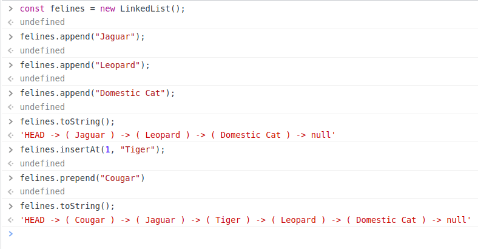

Linked List:
Methods:
-
append(value) adds a new node containing
passed in value to the end of the list.
-
prepend(value) adds a new node containing
the passed in value to the start of the list.
-
size() returns the total number of nodes in
the list.
-
head() returns the first node in the list.
-
tail() returns the last node in the list.
-
at(index) returns the node at the given
index.
-
pop() removes the last element from the
list.
-
contains(value) returns true if the list
contains the passed in value, and false otherwise.
-
find(value) returns the index of the node
containing the passed in value, or null if not found.
-
toString() returns a string representation
of the linked list.
-
insertAt(index, value) inserts a new node
with the provided value at the given index.
-
removeAt(index) removes the node at the
given index.
Usage:
All the above methods can be tried via the browser console.
In order to do that, first instantiate the
LinkedList class, and then call the methods on
that instance.
Example:
